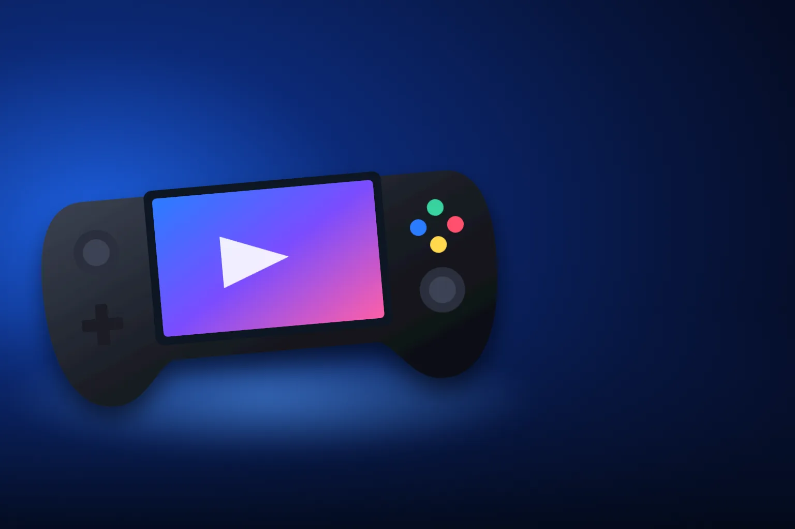

WINDOWS COM XBOX (ROG XBOX ALLY)
Melhor portátil para Game Pass
Para jogar Game Pass, Steam e qualquer loja de PC na mão, com a interface do Xbox.

Melhor custo-benefício para Game PassROG Xbox Ally (16 GB, 512 GB)
CURADORIA TECHAPROVADO · 2026
Os portáteis de PC levam o Game Pass e a Steam para a mão, mas o sistema muda tudo: Windows com a interface do Xbox ou SteamOS, o do Steam Deck. Separamos 4 modelos em 2 perfis, do custo-benefício ao top de linha, e dizemos para quem cada um vale a pena.

NOSSA LEITURA
Com Windows (ROG Xbox Ally), você instala Game Pass, Steam, Epic e jogos com antitrapaça. Com SteamOS (Legion Go S), a experiência é de console, mas centrada na Steam. Depois, escolha a potência: o Z2 A é para jogos leves; o Z2 Extreme, para lançamentos.
COMECE POR AQUI
WINDOWS COM XBOX (ROG XBOX ALLY)
Para jogar Game Pass, Steam e qualquer loja de PC na mão, com a interface do Xbox.
STEAMOS (LEGION GO S)
Para quem joga quase tudo na Steam e quer um portátil que funciona como console.

A FICHA, TRADUZIDA
01 - WINDOWS OU STEAMOS
O Windows roda qualquer loja de PC: Game Pass, Steam, Epic, EA. Nos ROG Xbox Ally, ele liga numa interface do Xbox feita para o controle, que esconde a área de trabalho.
O SteamOS é o sistema do Steam Deck: liga direto na Steam, pausa o jogo como um console e é mais simples. Em compensação, não instala o Game Pass e não roda jogos com antitrapaça que exigem Windows.
Se a sua biblioteca está na Steam, o SteamOS é mais prático. Se você assina o Game Pass ou joga tiro online competitivo, fique no Windows.
02 - PROCESSADOR
Todos usam processadores AMD Ryzen Z2. O Z2 A, do ROG Xbox Ally, é o mais simples: bom para jogos independentes, antigos e para a nuvem. O Z2 Go, do Legion Go S, fica um pouco acima.
O Ryzen AI Z2 Extreme, do Ally X e do X20, é o que roda os lançamentos de PC no portátil, em geral com gráficos médios ou baixos.
Nenhum portátil roda jogo pesado como um PC gamer de mesa. Para o máximo de gráficos, o portátil é complemento, não substituto.
03 - BATERIA
O Ally X e o X20 têm bateria de 80 Wh, a maior da seleção. O Ally comum tem 60 Wh e o Legion Go S, 55,5 Wh.
Em jogos pesados, os portáteis de Windows duram de 2 a 4 horas. Em jogos leves e com 30 quadros por segundo, a duração aumenta bastante.
Reduzir o brilho, limitar os quadros por segundo e usar o modo de economia do aparelho são os jeitos mais eficazes de jogar mais tempo.
04 - TELA
Os Ally e Ally X têm tela IPS de 7 polegadas com 1080p e 120 Hz. O X20 tem OLED de 7,4 polegadas, com preto profundo. O Legion Go S tem 8 polegadas com 1920 × 1200.
Tela maior ajuda a ler textos de jogos de PC, que foram feitos para monitor. Em compensação, deixa o aparelho mais pesado.
120 Hz só aparece em jogos que passam de 60 quadros por segundo; em jogos pesados, o ganho é a fluidez da interface.
05 - ARMAZENAMENTO
Jogos de PC modernos ocupam de 50 a 150 GB. Com 512 GB, cabem poucos; 1 TB é o confortável.
Os modelos aceitam cartão microSD para jogos mais leves, e o SSD interno pode ser trocado por um maior.
Antes de pagar mais pelo armazenamento, veja se o cartão de memória não resolve para a sua biblioteca.
A CURADORIA EM DETALHE
4 modelos da pesquisa
PERFIL · 3 MODELOS, DA ENTRADA AO TOP DE LINHA
A família ROG Xbox Ally, da ASUS com a Microsoft, roda Windows 11 e liga direto numa interface de tela cheia do Xbox, pensada para o controle. Como é um PC, instala Game Pass, Steam, Epic e qualquer outra loja. A escada sobe em potência, memória, bateria e tela.
ROG XBOX ALLY · ENTRADA 1 de 3
Melhor custo-benefício para Game Pass
Ryzen Z2 A · tela de 7 polegadas 120 Hz · Windows 11
Ver preço na AmazonPOR DENTRO DA ESCOLHA
A porta de entrada para jogar PC na mão: processador AMD Ryzen Z2 A, 16 GB de memória, 512 GB de SSD e tela touchscreen de 7 polegadas com 120 Hz e FreeSync Premium. É o mais leve da família e liga direto na interface do Xbox.
O ROG Xbox Ally é para quem quer o catálogo do PC no portátil sem pagar o preço do Ally X. Para Hades, Stardew Valley, Hollow Knight e o Game Pass na nuvem, sobra. Para jogar os grandes lançamentos, suba para o Ally X.
| Processador | AMD Ryzen Z2 A |
|---|---|
| Memória | 16 GB |
| Armazenamento | 512 GB SSD |
| Tela | 7 polegadas, 1080p, 120 Hz, touchscreen |
| Sistema | Windows 11 Home com interface Xbox |
| Loja | Vendido pela Amazon |
Fonte: ficha e descrição do anúncio, conferidas em 16/11/2026. Dados informados pelo fabricante.

ROG XBOX ALLY · CUSTO-BENEFÍCIO 2 de 3
Melhor custo-benefício para lançamentos de PC
Ryzen AI Z2 Extreme · 24 GB · bateria de 80 Wh
Ver preço na KaBuM!POR DENTRO DA ESCOLHA
O salto é de potência: processador AMD Ryzen AI Z2 Extreme, 24 GB de memória, 1 TB de SSD e bateria de 80 Wh. Os gatilhos têm vibração própria, como no controle do Xbox.
O Ally X é o modelo equilibrado da família: o mesmo processador e a mesma bateria do X20, com tela IPS comum. Para quem quer desempenho de verdade, é o ponto de parada; o X20 acrescenta só a tela OLED.
| Processador | AMD Ryzen AI Z2 Extreme |
|---|---|
| Memória | 24 GB |
| Armazenamento | 1 TB SSD |
| Tela | 7 polegadas, 1080p, 120 Hz, touchscreen |
| Bateria | 80 Wh |
| Sistema | Windows 11 Home com interface Xbox |
Fonte: ficha e descrição do anúncio, conferidas em 16/11/2026. Dados informados pelo fabricante.

ROG XBOX ALLY · TOP DE LINHA 3 de 3
Top de linha com tela OLED
Tela OLED de 7,4 polegadas 120 Hz · Ryzen AI Z2 Extreme · 1 TB
Ver preço na KaBuM!POR DENTRO DA ESCOLHA
O X20 é o Ally X com tela OLED de 7,4 polegadas e 120 Hz: o mesmo processador Ryzen AI Z2 Extreme, 24 GB de memória e 1 TB. O ganho está no preto profundo e nas cores da tela.
Não há portátil com Windows acima dele nesta seleção. Mas o salto de preço sobre o Ally X é grande para um ganho só de tela; ele vale para quem passa horas no portátil e faz questão do OLED.
| Processador | AMD Ryzen AI Z2 Extreme |
|---|---|
| Memória | 24 GB |
| Armazenamento | 1 TB SSD |
| Tela | 7,4 polegadas OLED, 120 Hz |
| Sistema | Windows 11 Home com interface Xbox |
| Loja | Loja oficial ASUS |
Fonte: ficha e descrição do anúncio, conferidas em 16/11/2026. Dados informados pelo fabricante.
PERFIL · 1 MODELO
O Legion Go S com SteamOS usa o mesmo sistema do Steam Deck, que não é vendido oficialmente no Brasil. Ele liga direto na biblioteca da Steam, com pausa e retomada como num console, e tem tela grande de 8 polegadas.
LEGION GO S · CUSTO-BENEFÍCIO 1 de 1
Melhor custo-benefício com SteamOS
Ryzen Z2 Go · tela de 8 polegadas 120 Hz · SteamOS
Ver preço na KaBuM!POR DENTRO DA ESCOLHA
O Legion Go S roda SteamOS, o sistema do Steam Deck: liga direto na biblioteca da Steam, pausa e retoma o jogo como um console e recebe as otimizações da Valve. Tem tela de 8 polegadas com resolução 1920 × 1200 e 120 Hz, 32 GB de memória e 1 TB.
É a forma oficial de ter a experiência do Steam Deck no Brasil, com tela maior e mais memória. Para quem joga Game Pass ou jogos online com antitrapaça, o ROG Xbox Ally é o caminho.
| Processador | AMD Ryzen Z2 Go |
|---|---|
| Memória | 32 GB |
| Armazenamento | 1 TB SSD |
| Tela | 8 polegadas, 1920 × 1200, 120 Hz |
| Sistema | SteamOS |
| Loja | Loja oficial Lenovo |
Fonte: ficha e descrição do anúncio, conferidas em 16/11/2026. Dados informados pelo fabricante.
Nenhum modelo encontrado. Tente outro termo ou volte para Todos.
LADO A LADO
| Modelo | Perfil | Posição | Processador | Destaque |
|---|---|---|---|---|
| ROG Xbox Ally (16 GB, 512 GB) | ROG Xbox Ally | Entrada | AMD Ryzen Z2 A | Ryzen Z2 A · tela de 7 polegadas 120 Hz · Windows 11 |
| ROG Xbox Ally X (24 GB, 1 TB) | ROG Xbox Ally | Custo-benefício | AMD Ryzen AI Z2 Extreme | Ryzen AI Z2 Extreme · 24 GB · bateria de 80 Wh |
| ROG Xbox Ally X20 (tela OLED) | ROG Xbox Ally | Top de linha | AMD Ryzen AI Z2 Extreme | Tela OLED de 7,4 polegadas 120 Hz · Ryzen AI Z2 Extreme · 1 TB |
| Lenovo Legion Go S com SteamOS (32 GB, 1 TB) | Legion Go S | Custo-benefício | AMD Ryzen Z2 Go | Ryzen Z2 Go · tela de 8 polegadas 120 Hz · SteamOS |
CONSIDERAÇÕES FINAIS
O ROG Xbox Ally X20 vale para quem faz questão da tela OLED: o desempenho é o mesmo do Ally X.
Para Game Pass e jogos mais leves, o ROG Xbox Ally. Para rodar os lançamentos de PC, o ROG Xbox Ally X. Para quem joga na Steam, o Legion Go S com SteamOS.
Não exatamente: é um PC com Windows 11 que liga numa interface do Xbox. Roda o Game Pass para PC e outras lojas, mas não os discos nem a biblioteca de console do Xbox Series.
Não oficialmente. Ele só chega importado, sem garantia local. O Legion Go S com SteamOS usa o mesmo sistema e tem venda oficial da Lenovo.
Na data da pesquisa, não encontramos estoque estável de vendedor nacional para os dois, e a distribuição oficial do Series X no Brasil foi interrompida em 2025. Quando o estoque normalizar, revisamos o guia.
Não para jogos pesados com gráficos no máximo. Ele é ótimo para jogar no sofá, na cama e em viagem, e pode ligar na TV ou no monitor.
Porque ele muda várias vezes por dia. Usamos o preço só para montar a escada de cada perfil; o botão leva ao valor atualizado na loja.
TRANSPARÊNCIA EDITORIAL
Separamos os perfis pelo sistema: Windows com a interface do Xbox (família ROG Xbox Ally) e SteamOS (Legion Go S). Cada modelo precisa responder com clareza "para quem ele é o certo".
Em cada perfil há modelos em faixas de preço diferentes, e cada degrau precisa entregar algo que o anterior não entrega. Dois modelos com a mesma proposta não entram juntos.
Ficha e especificações foram conferidas nos anúncios das lojas em 16/11/2026.
Os links de compra desta página são de afiliado: se você comprar por eles, o TechAprovado pode ganhar uma comissão, sem custo adicional para você. Isso não muda a ordem nem a escolha dos produtos.
📲 GUIAS E DICAS NO SEU FEED
Dicas práticas antes de comprar, em carrosséis e vídeos curtos, sempre com link para o guia completo.